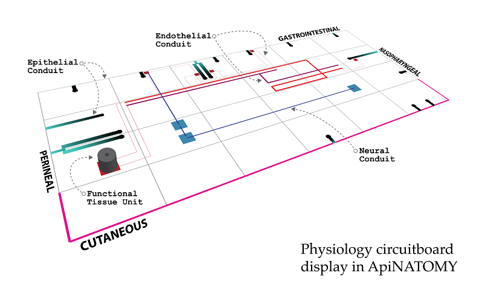

Open Physiology

Home 


A key challenge for the biomedical community is to bridge data from healthcare and experimental biology to computational models of physiology. The core goal for the Open Physiology effort is to develop a knowledge management solution to address this challenge across multiple scales of biological structure. In particular, we are developing open tools to enable the searching, objective comparison and re-use of models and associated data in terms of their physiological meaning.